SGX VC 使用手册¶
1. 引言¶
1.1 编写目的¶
本文档为sgx vc使用文档，着重以fabric多链为例。
1.2背景¶
zkp多链主要是通过插件机制对不同的区块链系统进行支持，在使用fabric的时候需要提前编译好fabric插件。
2. 安装和初始化¶
编译安装
解压缩tar包，得到zkp目录
zkp server -C ./config.toml运行
初始化fabric网络： 启动fabric节点组网
部署fabric合约：依次部署proxy chaincode, business chaincode
3.配置说明¶
配置模式
[general] mode = "sgx"
服务监听相关说明:
[http]
tls = true #是否启用安全传输层
port = 8080 #监听端口
net = "0.0.0.0" #监听网卡，0.0.0.0表示全部网卡
domainName = "example.com" #服务域名
cert = "./certs/tls.cert" #启用安全传输层情况下的证书文件
ca = "./certs/ca.cert" #启用安全传输层情况下的ca文件
priv = "./certs/tls.priv" #启用安全传输层情况下的证书私钥文件
clientAuth = false #是否验证客户端身份
隐私数据库配置说明:
dbNum = 0 #连接隐私数据库数量，0表示不连接，此时忽略下面的配置项
[db1] #隐私数据库1配置
dbPath = "petShop"
dbType = "mysql"
host = "127.0.0.1"
port = 3306
userName = "root"
pwd = "123456"
dbName = "flatoVC"
maxIdle = 2 #最大的空闲连接数，没有redis连接时依然可以保持N个空闲的连接
maxActive = 11 #最大的激活连接数，同时最多有N个连接
maxIdleTime = 180 # second
[db2] #隐私数据库2配置
dbPath = "superMarket"
dbType = "leveldb"
host = "./leveldb"
[db3] #隐私数据库3配置
dbPath = "coffeeShop"
dbType = "redis"
host = "127.0.0.1"
port = 6379
userName = "root"
pwd = "123456"
dbName = "1"
maxIdle = 1 #最大的空闲连接数，没有redis连接时依然可以保持N个空闲的连接
maxActive = 10 #最大的激活连接数，同时最多有N个连接
#支持任意合理数量的数据库连接，如[db4],[db5]等
电路数据库相关配置:
[manager]
data = ".data" #电路数据库位置
sdk配置说明（fabric）:
[sdk]
enable = true
nodes = [["peer0.org1.example.com", "peer0.org2.example.com"]]
plugin = "./fabric.so"
configpath = ["/Users/jalyzhang/Documents/t2/untitled29/fabric-sdk-go/test/demo/org1-config.yaml"]
user = ["User1"]
namespace = ["jackchannel"]
#！！！如果启用SDK请先检查sdkconfig.toml的配置是否正确，以及配置必要的crypto-config
enable 为true时，使用插件
nodes：根据proxy chaincode部署时的策略，对proxy chaincode使用invoke时需要的背书节点集合。
plugin：插件的位置
configpath：使用fabric go sdk时的配置文件位置
user：对proxy chaincode使用invoke时需要的用户
namespace：proxy chaincode和business chaincode所处的channel
4.操作实例¶
4.1 场景介绍¶
启动fabric1.4的一个网络，本文档以fabric samples中byfn的网络为例2个org，每个org下有两个节点，1个orderer，依次部署proxy chaincode, business chaincode。
4.3 sdk操作¶
本文档用fabric go sdk在业务调用侧进行一次对business chaincode的invoke操作，并在invoke前后分别做一次query。
进行invoke的参数:
[]string{"proxyCC", "{\"v\":99,\"r\": 101}", "becc", "callback", "http://127.0.0.1:9088/Callback", "result: ${result}, proof: ${proof}"}
分别对应为
proxyContractAddr, input, businessContractAddr, businessContractMethod, WebHook and WebHookBodyPattern
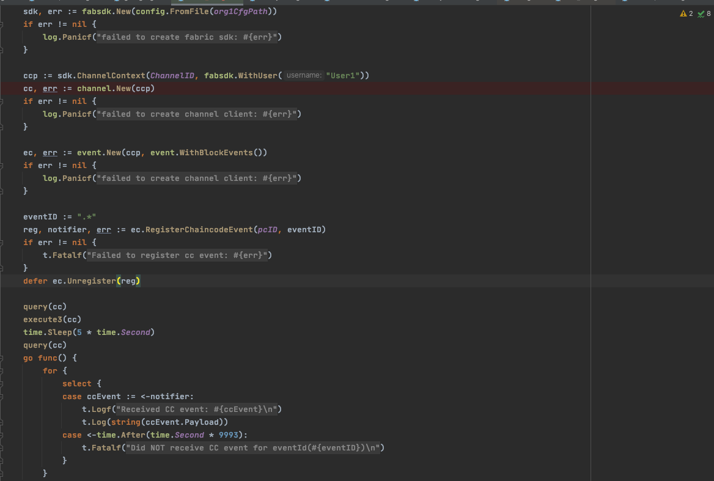
sdk执行结果：
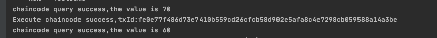
vc节点执行结果：
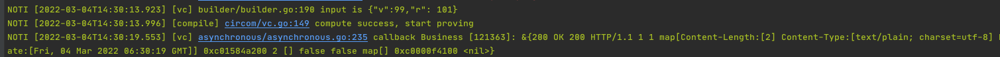
4.4 非sdk操作¶
可以不使用sdk，而直接使用restful接口进行操作。例如4.3所示操作可以使用5.2中接口6computeandprove实现类似效果的操作。
5.restful 接口¶
5.1 zkp vc¶
注：localhost:8080作为参考，最终IP和端口以服务器地址为准。
接口1：编译¶
输入（form-data格式）:
file：xxx.tar.gz或xxx.circom（文件格式。tar包形式应该包含所有电路，例如一个circom文件中include其他文件，则应该全部包含。） target：xxx.circom （文本格式。指定要编译的文件名称） algo：groth16_bn254 （文本格式。算法名称） withC：tmp （可省略。给定一个文件夹名称，用于生成withC的文件，compute过程时无需再次传参，默认使用上次生成的witchC文件）
如下图：
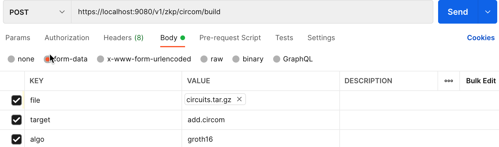
输出:
xxx.tar.gz的下载链接（包含编译后的solidity合约（链上部分）、带setup的r1cs文件（链下部分）） id（链下计算ID）
如下图：
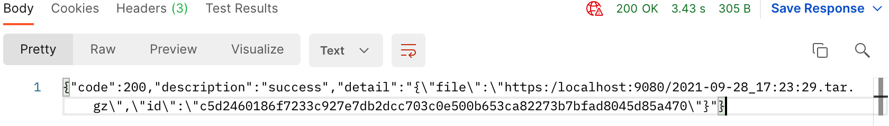
错误提示
输入错误，错误码601，缺少字段，错误信息（”input data error , give input(algo or target is nil) error, should input eg. (file, target, algo)”）;
输入错误，错误码601，字段内容解析错误，错误信息（”input data error , give input(err.Error()) error, should input eg. (file, target, algo)”）；
内部错误，错误码602，编译失败的具体原因，错误信息（”inner compilation error, function(genR1csAndSol) error: err.Error()”）
内部错误，错误码602，数据库操作失败，错误信息（”inner compilation error, function(db.Put) error: err.Error”）
接口2：重置¶
输入（raw-json格式）:
id:"xxxxx" （build返回的id）
如下图：

输出:
xxx.tar.gz的下载链接（编译后的solidity合约（链上部分，用于合约升级）、带setup的r1cs文件（链下部分））

错误码：
输入错误，错误码602，没有传入请求body，检查是否是post格式，是否按照接口传入了正确的参数，错误信息（check whether it is an https post request or whether~~ ~~parameters are passed in）
输入错误，错误码601，缺少字段，错误信息（”input data error , give input(your input) error, should input eg. (id)”）
输入错误，错误码601，ID不存在，错误信息（”input data error , give input(your ID) error, should input eg. (a right id)”）
内部错误，错误码602，数据库操作失败，错误信息（”inner compilation error, function(db.Put) error: err.Error”）
接口3：证明¶
输入（form-data）:
file：input.tar.gz或public.json（包含privacy.json隐私输入和public.json公共输入） id: 链下计算id tx_verison: 目前还未对tx_version做检查
如下图：
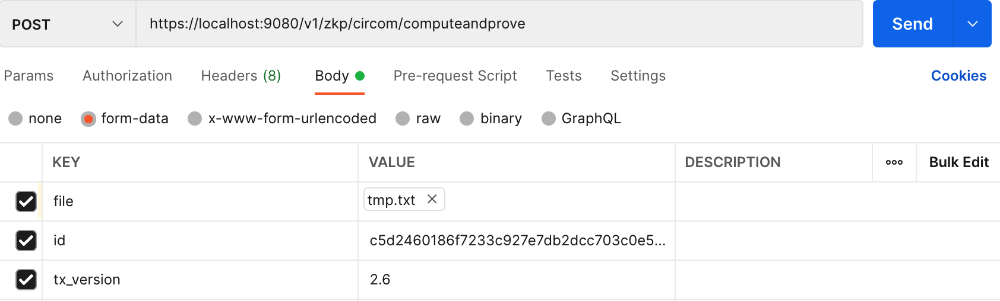
输出
正确则直接返回proof。如下图：
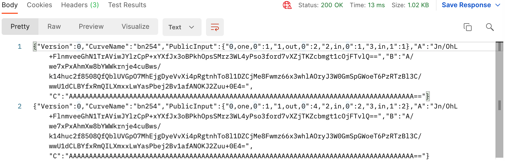
错误提示
输入错误，错误码601，缺少字段，错误信息（input data error , give input(err.error) error, should input eg. (file, id, tx_version)）
输入错误，错误码601，id不存在，错误信息（input data error , give input(err.error) error, should input eg. (a right id )）
输入错误，错误码601，字段内容解析错误，错误信息（input data error , give input(err.error) error, should input eg. (right input json file)）
内部错误，错误码602，数据库脏数据，错误信息（”inner compilation error, function(ReadR1CS/ReadPkBytes) error: err.Error”），此种情况是从数据库中获取数据，发现数据读取失败，可能的原因是服务器端发生异常，写数据到数据库时内容错误，或者服务器端数据库数据被手动更改
内部错误，错误码602，生成证明失败或计算过程失败，详细原因在error中，错误信息（”inner compilation error, function(ComputeAndProve) error: err.Error”）
接口4：验证¶
输入（form-data）:
proof:{}（由computeandprove得到） public:public.json (公共输入) id:链下计算id
如下图：
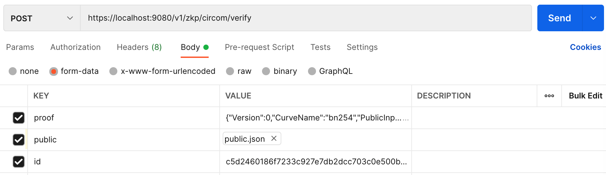
输出
成功显示verify success，错误显示具体原因
如下图：
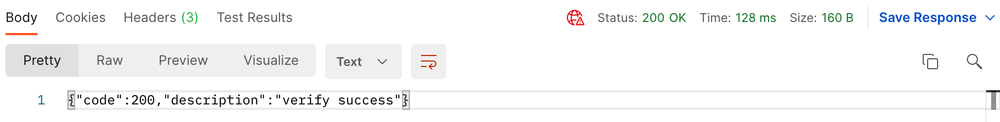
错误提示
输入错误，错误码601，缺少字段，错误提示（input data error , give input(err.error) error, should input eg. (proof, public, id)）
输入错误，错误码601，proof出错，错误提示（input data error , give input(err.error) error, should input eg. (a right proof)）
输入错误，错误码601，id不存在，错误信息（input data error , give input(err.error) error, should input eg. (a right id )）
输入错误，错误码601， 输入的public.json解析失败，错误信息（input data error , give input(your public json) error, should input eg. (a right public json )）
输入错误，错误码601，给定的proof组数与公共输入组数不相等，错误信息（error: give public json num[xxx], but proof num[xxx].）
内部错误，错误码602，数据库脏数据，错误信息（”inner compilation error, function(ReadVkBytes) error: err.Error”）
内部错误，错误码602，验证失败具体返回，错误信息（verify failed, proof[xxx], public json[xxx], error: xxx）
接口5：查询solidity源码¶
输入 (raw-json):
id：链下计算id
如下图：
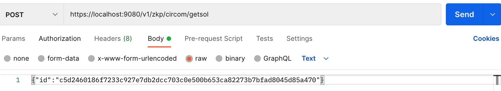
输出:
tar包文件的下载链接
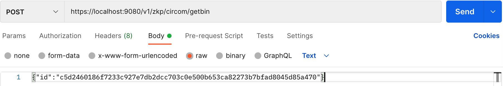
错误信息
输入错误，错误码601，没有传入请求body，检查是否是post格式，是否按照接口传入了正确的参数，错误信息（check whether it is an https post request or whether parameters are passed in）
输入错误，错误码601，字段解析失败，错误信息（input data error , give input(your input) error, should input eg. (only need to provide id)）
输入错误，错误码601，id不存在，错误信息（input data error , give input(err.error) error, should input eg. (a right id )）
接口6：查询编译结果¶
输入 (raw-json):
id：链下计算id
如下图：
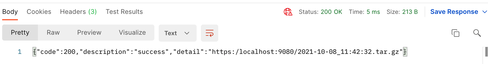
输出:
tar包文件的下载链接（编译后的solidity合约（链上部分）、带setup的r1cs文件（链下部分））
如下图：

错误信息：
输入错误，错误码601，没有传入请求body，检查是否是post格式，是否按照接口传入了正确的参数，错误信息（check whether it is an https post request or whether parameters are passed in）
输入错误，错误码601，字段解析失败，错误信息（input data error , give input(your input) error, should input eg. (only need to provide id)）
输入错误，错误码601，id不存在，错误信息（input data error , give input(err.error) error, should input eg. (a right id )）
5.2 sgx vc¶
接口4：getbin¶
url：https://ino4:8080/v1/sgx/wasm/getbin
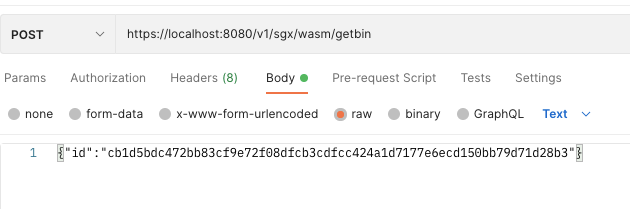
接口5：computeandprove >>>>>>>>>>>>>>>>>>>>>>>>>.
url：https://ino4:8080/v1/sgx/wasm/computeandprove